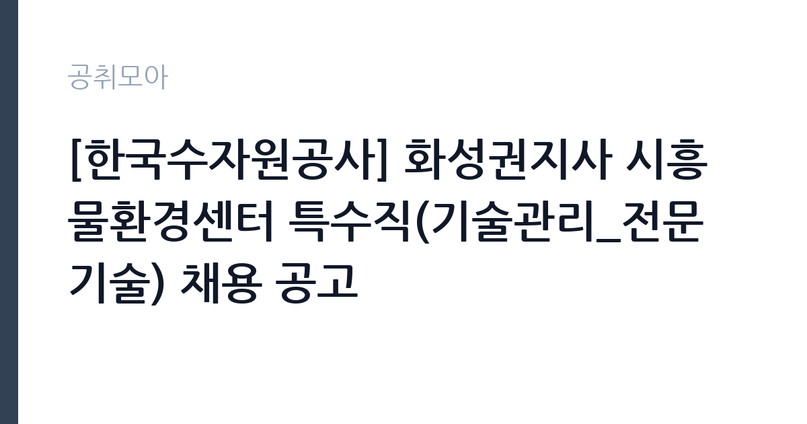

[공공기관] [한국수자원공사] 화성권지사 시흥물환경센터 특수직(기술관리_전문기술) 채용 공고
한국수자원공사 · 경기 · 마감 2026-11-06 (D-14) · 출처 잡알리오

한눈에 보는 모집 조건
| 기관 | 한국수자원공사 |
|---|---|
| 공고명 | [한국수자원공사] 화성권지사 시흥물환경센터 특수직(기술관리_전문기술) 채용 공고 |
| 고용형태 | 기간제 |
| 근무지 | 경기 |
| 게시일 | 2026-10-23 |
| 마감일 | 2026-11-06 (D-14) |
지원자격, 이렇게 읽으세요
- 공공기관 채용공시
- 세부 조건은 원문 공고문 확인
모집단위는 특수직(기술관리_전문기술) 1명입니다. 기간제 근로자는 근로계약 기간이 정해진 신분입니다. 계약 기간과 갱신 가능 여부가 근로계약서에 명시되며 기간 만료 시 근로관계가 종료됩니다. 결원 보충이나 특정 사업 기간에 맞춰 채용되는 경우가 많아 업무 범위가 명확합니다. 서류 단계에서 요건을 충족하지 못하면 이후 전형을 준비할 기회가 없습니다. 학력·경력·자격 요건을 항목별로 대조해 표시해 두고, 경력은 재직증명서와 경력증명서로 입증해야 합니다. 증명서에 직무 내용이 구체적으로 적혀 있지 않으면 경력으로 인정받지 못하는 경우가 있으니 발급 전에 기재 내용을 확인하십시오. 자격증은 유효 기간과 등록 상태까지 확인해야 하고, 자격 취득 예정자로 지원하려면 공고문에 예정자 허용 조항이 있는지 반드시 봐야 합니다. 특급기술자 이상 자격과 하·폐수 분야 경력 10년 이상을 동시에 요구합니다. 경력은 상하수도·토목·환경·기계·전기 분야로 한정되고, 산정 기준은 공고문의 서류심사 경력점수 기준을 따르므로 일반 경력과 계산 방식이 다를 수 있습니다. 자격증은 유효 기간과 등록 상태를 확인해야 합니다. 갱신이 필요한 자격이라면 갱신 여부를 먼저 점검하십시오.
이 공고의 포인트
이 공고의 첫 번째 포인트는 고용 형태입니다. 계약 기간이 정해져 있어 근무 종료 시점이 명확합니다. 그만큼 짧은 기간에 어떤 실적을 남길지가 중요해집니다. 두 번째는 모집단위가 분명하다는 점입니다. 특수직(기술관리_전문기술) 1명 단위로 선발하므로 배치 이후 담당 업무의 범위를 미리 가늠할 수 있습니다. 세 번째는 근무지입니다. 경기 기준으로 근무지가 정해져 있어 통근 시간과 비용을 함께 계산해야 합니다. 접수 마감은 2026-11-06로 길지 않아, 공고를 늦게 확인하면 준비 시간이 그대로 줄어듭니다. 채용 규모가 크지 않아 면접 비중이 높은 전형이 될 가능성이 있습니다.
전형은 어떻게 진행되나
선발 절차는 원문 공고문에 단계별로 적혀 있습니다. 채용 절차는 공고문에 안내된 순서대로 진행되며, 서류 접수 마감 후에는 추가 접수나 서류 보완이 이뤄지지 않는 것이 원칙입니다. 서류심사에서는 응시자격과 제출서류의 형식 요건을 기계적으로 확인하므로, 경력 증명서의 기간과 직무 내용이 공고의 요건과 정확히 맞아야 합니다. 면접은 지원자 수에 따라 집단면접과 개별면접으로 나뉘고, 직무 관련 질문과 상황 대응 질문이 함께 나옵니다. 합격자 발표는 개별 통보 또는 홈페이지 게시로 이뤄지며 이후 임용 절차가 진행됩니다. 면접조 편성과 대기 시간이 공지되므로 당일 도착 시간을 여유 있게 잡으십시오.
원문에서 확인한 전형 방식
□ 특급기술자* 이상, 하·폐수경력* 10년 이상 * 상하수도, 토목, 환경, 기계, 전기분야에 한함 ** 하·폐수경력의 산정은 "전형방법"의 "서류심사 경력점수 산정 기준"에 따름 □ 연령, 성별, 학력 제한 없음 □ 남자의 경우 병역필 또는 면제자(병역특례 근무중인 자 제외) □ 우리 공사 인사규정에 의한 결격사유가 없는 자 □ 채용예정일부터 현업 전일근무가 가능한 자
이런 분께 추천해요
- 경기에서 출퇴근이 가능한 분
- 기술관리(전문기술) 직무 경험이나 관련 자격을 갖춘 분
- 기간제 조건과 근무 기간을 확인하고 지원할 수 있는 분
지원 전 체크리스트
- 응시자격 요건을 충족하는가 — 경력은 증명서로 입증해야 합니다
- 계약 기간과 근무 시작일·종료일을 확인했는가
- 제출서류 목록을 모두 준비했는가 — 누락 시 서류 단계에서 탈락합니다
- 접수 마감 2026-11-06 이전에 접수 방식을 확인해 제출했는가
모집 일정과 제출 타이밍
접수는 2026-11-06에 마감됩니다. 공고 게시일 2026-10-23부터 계산하면 준비 기간은 약 14일입니다. 우편 접수는 도착 기준으로 판정되는 경우가 많아 마감일 소인만 믿으면 안 됩니다. 제출 서류는 공고문에 적힌 순서대로 정리하면 담당자가 확인하기 쉬워 누락이 줄어듭니다. 경기 지역 근무지는 사업소나 시설이 외곽에 있는 경우가 많아 차량 통근 가능 여부를 확인해야 합니다.
직무 이해하기: 공공기관
공공기관은 도로와 수자원, 농지, 부동산 시장 관리 같은 공적 기능을 수행합니다. 현장 사업소는 도로와 시설 유지 관리, 조경과 환경 관리 업무를 직접 수행하며 계절 사업에 따라 기간제 인력을 채용합니다. 한국수자원공사 시흥물환경센터는 하수·폐수 처리 시설을 운영하며 수질 관리와 설비 유지보수를 담당합니다. 특수직 기술관리 인력은 시설 운영 실무와 공정 개선, 안전 점검을 맡습니다. 직무 교육은 입사 후 기관 자체 계획에 따라 진행되므로 사전 경험이 없어도 시작할 수 있습니다.
자기소개서 작성 팁
기술관리(전문기술) 지원서는 직무 연관성을 앞세우는 것이 핵심입니다. 첫 문단에 지원 직무와 본인 경험을 한 문장으로 연결하고, 이어서 담당했던 업무의 규모와 결과를 수치로 제시하십시오. 문항별 글자 수 제한을 먼저 확인하고, 각 문항의 첫 문장에 결론을 배치하는 방식이 읽기 쉽습니다. 지원 동기는 기관의 어떤 사업에 기여하겠다는 한 문장으로 시작하고, 이어서 본인의 경험을 근거로 붙이십시오. 감점을 피하려면 다른 기관에 보낼 수 있는 범용 문장을 그대로 쓰지 않는 것이 중요합니다. 기관 이름과 사업명이 문장 안에 자연스럽게 들어가야 준비도가 드러납니다.
면접 준비 포인트
면접에서는 기술관리(전문기술) 직무를 얼마나 이해하고 있는지, 그리고 한국수자원공사의 사업을 어느 정도 알고 있는지 확인합니다. 답변은 상황, 판단, 조치 순서로 정리하면 전달이 분명해집니다. 본인 경험을 말할 때는 기간, 역할, 결과를 순서대로 정리해 두면 질문이 바뀌어도 활용할 수 있습니다.
급여·근무조건 읽는 법
기간제 근로자는 근로계약 기간이 정해진 신분이라 계약 종료 시점이 명확합니다. 보수는 기관의 기간제 임금 기준에 따라 월급 또는 일급으로 정해지고, 계약 기간이 짧으면 월 급여가 높아도 연간 총액은 적어질 수 있습니다. 2026년 적용 최저임금은 시급 10,320원, 월 환산 2,156,880원(209시간 기준, 고용노동부 고시 제2025-47호)입니다. 같은 기관의 무기계약직과 업무가 비슷해도 신분이 다르면 수당 항목이 달라지므로, 첨부 공고문의 처우표에서 기본급·수당·상여를 항목별로 확인하십시오. 한국수자원공사 특수직은 정규직이 아닌 기간제 특수직 신분으로, 공사 내부 보수 기준에 따라 연봉이 정해지고 계약 기간이 정해집니다. 공사는 특수직 공고에서 근무기간과 근무형태(통상근무 주 5일 전일제)를 명시하고 보수는 처우 항목에 제시하는 방식을 쓰고 있습니다(2026년 8월 기후협력개발처 특수직 공고 사례). 특급기술자 자격과 하·폐수 경력 10년 이상을 요구하는 경력직이라 경력 인정 범위가 연봉 산정에 직접 영향을 줍니다. 위 수치는 공개된 봉급표·보도·유사 공고 기준이며, 이번 공고의 확정 금액은 첨부 공고문 처우표에서 확인하십시오. 보수는 보통 기본급, 각종 수당, 상여로 나뉘어 지급됩니다. 기본급만 보면 적어 보여도 정액급식비와 명절휴가비, 복지포인트가 붙으면 실제 총액이 달라지므로 항목별로 확인해야 합니다. 4대 보험과 퇴직급여 적용 여부도 함께 보십시오. 기간제는 계약 기간이 짧아 월 급여가 높아도 연간 총액은 적을 수 있습니다.
자주 묻는 질문
- 선발 인원과 직급은 어떻게 되나요?
이번 공고의 모집단위는 특수직(기술관리_전문기술) 1명입니다. 직종별 인원과 직급은 공고문 모집분야 항목에 표로 제시되어 있으니 원문에서 확인하십시오. - 근무지는 어디인가요?
경기입니다. 세부 근무지와 출퇴근 조건은 원문 공고문의 근무예정지 항목에서 확인할 수 있습니다. - 보수는 얼마인가요?
기간제 신분에 따라 한국수자원공사의 임금 규정 또는 보수규정을 적용받습니다. 본문에 확정 금액이 없으므로 첨부 공고문 처우표에서 기본급과 수당을 나눠 확인하십시오.
함께 보면 좋은 공고
[공공기관] 우체국물류지원단 서울지사 동서울물류사업소 기간제(발착직) 채용 공고 — 마감 2026-10-29[공공기관] [광주보훈병원] 중증장애인 체험형 청년인턴(재택 사무보조) 채용 공고 — 마감 2026-11-02[공공기관] 국방기술품질원 2026년 하반기 정기채용(임용후보자(정규직, 무기사업직)) — 마감 2026-11-05출처: 잡알리오 공개정보를 바탕으로 공취모아가 정리한 안내글입니다. 모집 조건·일정은 변경될 수 있으니 지원 전 반드시 원문 공고문을 확인하세요. 본 글은 정보 제공용이며 합격을 보장하지 않습니다.